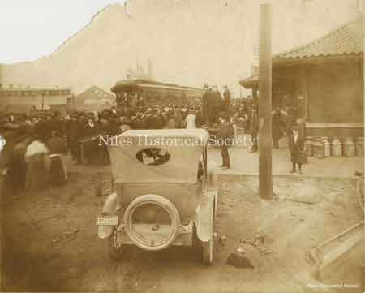
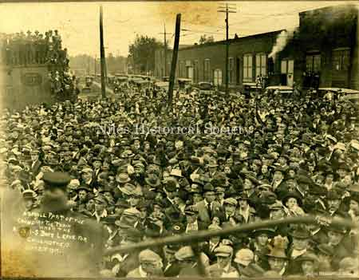
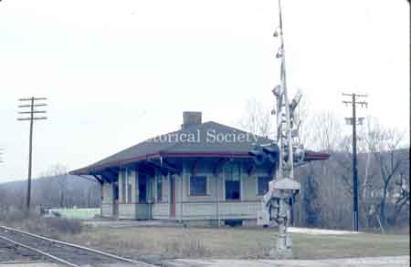
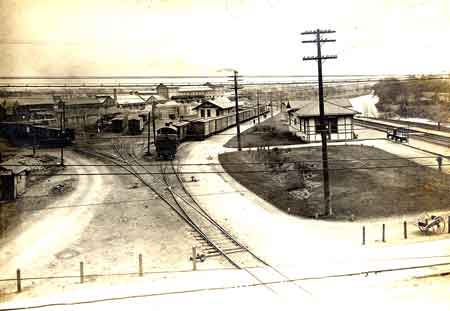

Ward-Thomas Museum


Railroad Stations in Niles, Ohio
The Pennsylvania Railroad, Erie Railroad and the Baltimore and Ohio Railroad
Ward — Thomas
Museum
Home of the Niles Historical Society
503 Brown Street Niles, Ohio 44446
Click here to become a Niles Historical Society Member or to renew your membership
Click on any photograph to view a larger image, click on image again to zoom into photograph.
|
Old Erie RR Depot. It was leased to the New York, Pennsylvania and Ohio railroad which built this frame station (1872) and in 1880 became part of the Erie RR. The station was located on Mahoning Street (formerly Depot Street) just west of Pratt Street. Around 1915 the station was demolished when the Erie railroad replaced it with a larger brick station.
This brick station, opened in 1915,
was located on Mahoning Street (formerly Depot Street) just west
of Pratt Street. It was the most luxurious in Niles, constructed
of brick and was a fine example of 19th century Western Stick
architecture. The Erie Railroad Station on Mahoning Avenue shortly before it was demolished in 1981. Photo 1968. S11.176 |
Railroad
Stations in Niles, Ohio McKinley Memorial Birthplace Committee
Secures a New Erie Depot Erie Railroad Depot Demolished.
|
|
| |
||
|
The Erie Rail Road passenger station
was near Langley Street and the Niles Firebrick factory. |
The Erie Depot had been boarded |
WWII draftees standing in front
of the Erie Railroad Depot, November, 1943: |
| |
||
| Architect Drawings of New Erie Railroad Station on Mahoning Avenue. |  |
 |
| |
||
|  |
(L) Niles soldiers going to the service. 1918…This photo was taken at the old Erie Train Station, My Grandfather (William Harris) and his brother, Frederick Kent Harris were on the train. The train was taking new draftees for processing in 1918. Their father (Frederick Harris) is seen left-of-center, next to the woman with the white collar — Richard Harris (R) A small part of the crowd at
the Erie Railroad train station when the Niles boys left for Chillicothe,
Ohio for WWI. |
 |
|
The American Railway Express operated at the Erie Railroad Depot on Mahoning Avenue in Niles, Ohio. Charles Robinson, carrying a pistol in a holster, is featured with his horse and delivery wagon. Goods that arrived at the station would be delivered throughout the city. PO1.2022 |
Steam locomotive and tender
of the |
Erie Rail Road caboose as it crosses over County Line Road in Mineral Ridge. P11.41 |
| |
||
|
An early view of the Pennsylvania Railroad passenger station, which was located on South Main Street near the Mahoning River. The Niles Firebrick Company is in the background. PO1.1460 |
|
 |
|
An aerial view of the Niles Firebrick kilns looking west with the Mahoning River and Pennsylvania Railroad stations and yard on the left side. PO2.474 |
 |
|
| Pennsylvania Railroad Station,
1974. |
View showing the PRR crossing at Object in foreground is water standpipe
|
Photograph taken from the viaduct looking to the west. Seen are St. Stephen Church and the Nun’s home, and St. Stephen school. PRR Water tower on left side.
|
See map at bottom. PO1.1458 |
(L): The B&O railroad was located on the north side of Church Street. It ran through Niles as early as 1874. It later expanded taking in the Ashtabula & Pittsburgh line and the Painesville & Youngstown line. Prior to 1953, State Street did not intersect with Robbins Avenue. The curved street is Church Street which did intersect Robbins. (R): B&O Freight Station in
1966. |
S11.175 |
|
The new B&O railroad at Crow Orchard about 1902. The RR was constructed in 1902 and its landfill covered the historic Salt Springs which attracted early settlers to the valley. PO1.1457 |
Waiting at the RR station for
the train. |
Someone got their signals mixed and the result must have been an ear-splitting crash as these two behemoths met head on near Niles. Unable to determine whether the wreck was on the Painesville and Youngstown RR or the PRR& Western RR as both ran through Niles. PO1.1455 |
|
Old Pennsylvania steam locomotive No. 9005. This was an 060 type engine. It had no front truck, 6 drive wheels and no trailing trucks. This type of engine was used for short hauls and yard work. Notice the “derby” hats on two of the maintenance crew. PO1.1464 |
The Fifth Avenue Iron Bridge with
its
|
In 1953 the North Main Street Underpass
project was completed. This allowed cars and trucks to continually
travel the roadway without having to wait at an elevated railroad
crossing for passing trains. The Erie and B&O trackseach had
their own bridge overpass. |
|
In 2011 the piers supporting the Iron bridge were damaged by a train and a new replacement bridge was constructed over the railroad tracks at the end of Fifth Avenue. P11.224A |
Postcard view of Pennsylvania
Railroad |
Pennsylvania Railroad tracks and crossing along the Mahoning River near the Ohio Edison plant, 2012. P11.273 |
|
Pennsylvannia Railroad engine# 7882. |
Railway Express employees. |
PRR passenger and freight station. |
Location of B&O Yard on 1918 map. |
Location of Erie station on 1918 map. |
Location of PRR yard on 1918 map. |
|
|
||


{kind=link}
{kind=link}
{kind=link}
{kind=link}
{kind=link}
{kind=link}
{kind=link}
{kind=link}
{kind=link}
{kind=link}
{kind=link}
{kind=link}